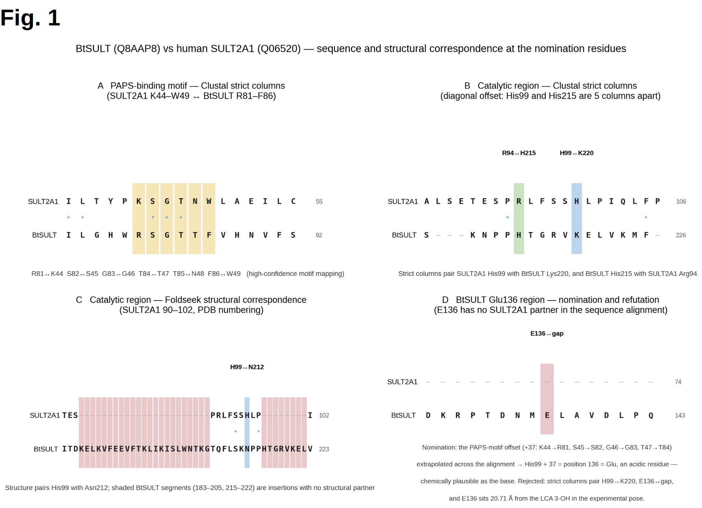
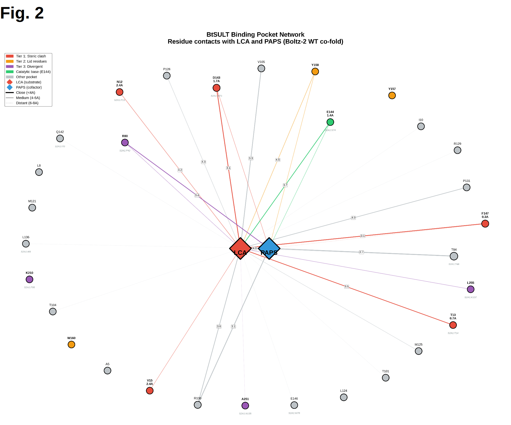
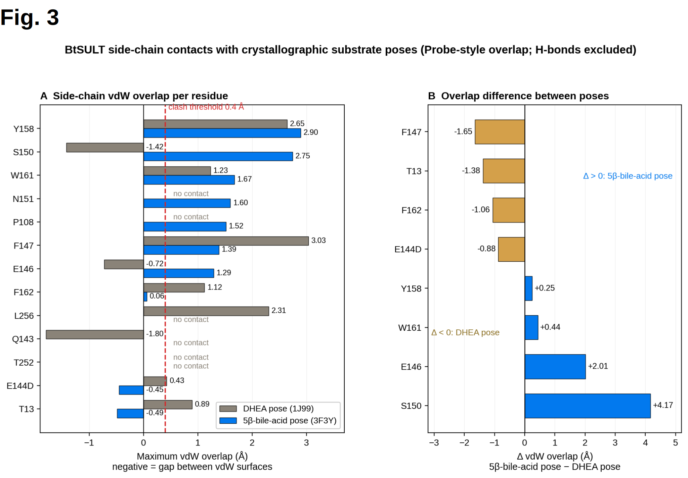
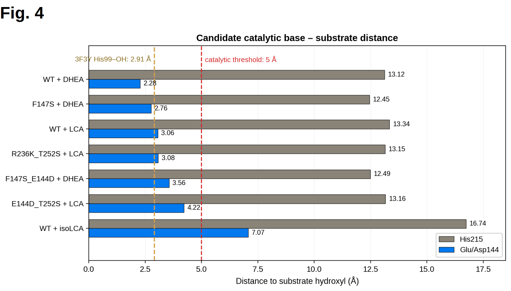
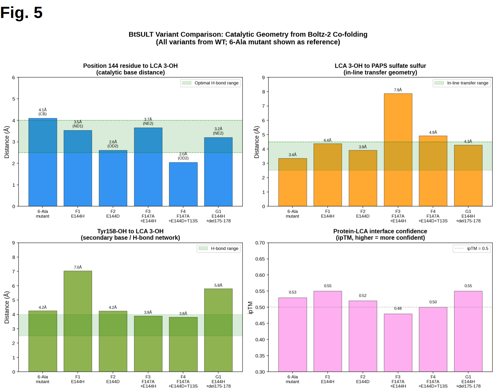
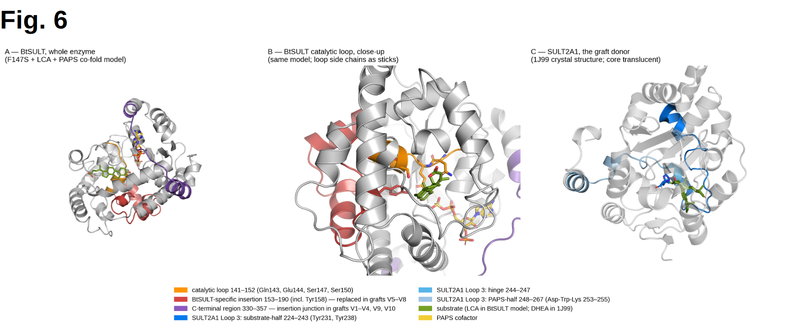
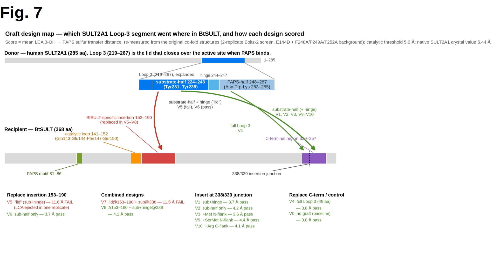
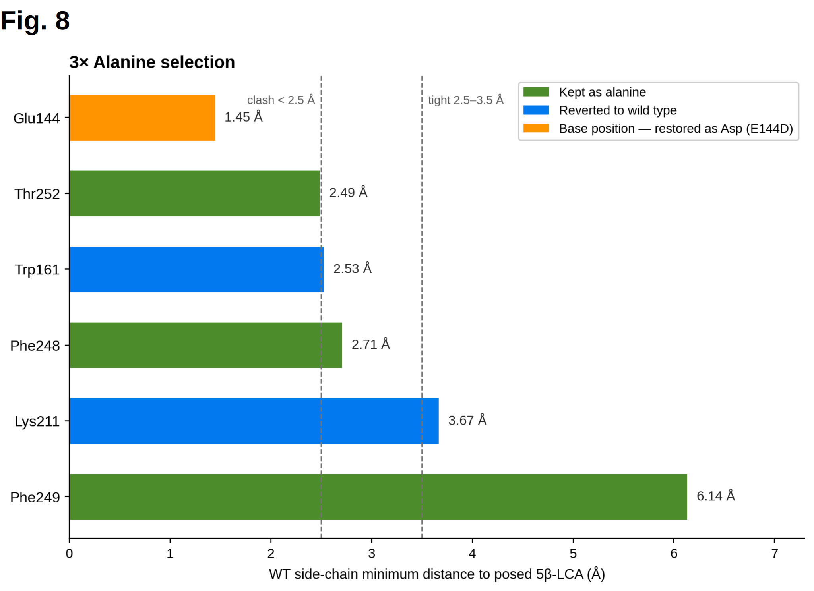
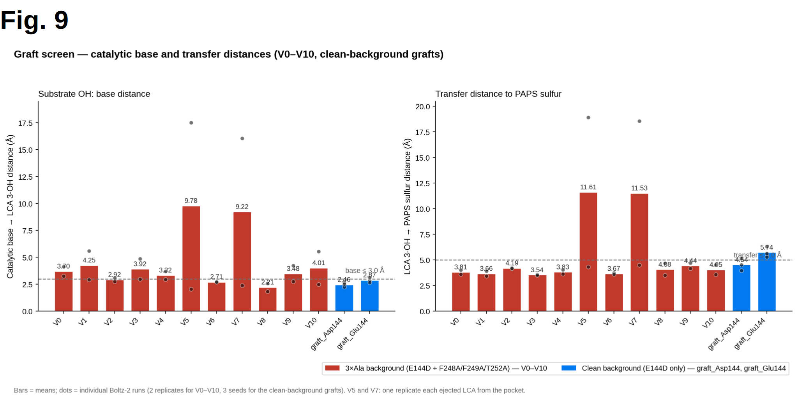
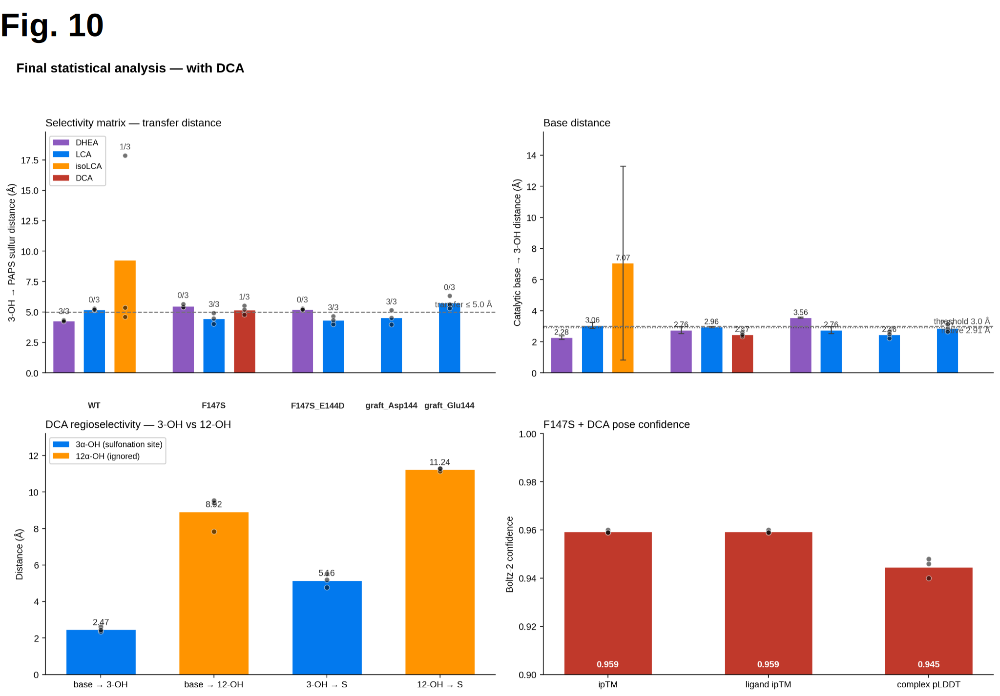

Model
Modeling is an important aspect of synthetic biology, where scientists and researchers test and engineer the viable aspect of their final product prior to stepping foot into a laboratory. Our modelling workflow primarily deals with the reengineering of the BtSULT enzyme for 5β steroid specificity.
Enzyme Engineering
Wild type(WT) BtSULT is a sulfotransferase derived from Bacteroides thetaiotamicron that solubilizes steroid molecules such as DHEA. BtSULT was selected after its biochemical characterization by Yao et. al (2022), demonstrating sulfotransferase activity on bile acids. However, the substrate selectivity profile of BtSULT reveals its inability to accept 5β steroid molecules due to a flat A/B fusion ring, such as 5β-LCA. This fact necessitates an engineering process to redesign the WT BtSULT active site to sulfonate 5β-LCA for PCS treatment
BtSULT was selected as the main engineering scaffold instead of its mammalian homolog, SULT2A1, considering BL21 expression bottlenecks. SULT2A1 crystal structures were utilized from UniProt as a structural template for active-site redesign.
The ideal reaction mechanism that indicates a working BtSULT mutant for wet-lab validation prioritizes sulfur-group transfer from PAPS to LCA 3-OH for production of sulfolithocholic acid, or sulfo-LCA.
According to Kakuta et. al (1998), their study of human estrogen sulfotransferase activity asserts sulfuryl transfer is only possible if the catalytic base contacts the substrate OH at hydrogen bond range, 2.7 to 3.1 Å. This is to be considered in our engineering process.
1. Structural Study of BtSULT
Although human SULT2A1 is well-studied and documented, BtSULT is not, requiring a study to identify candidates for a proposed catalytic base. Our early studies assumed BtSULT used histidine as a catalytic base, similar to His99 in human SULT2A1 (PDB: 1J99). Clustal Omega homology alignment tentatively suggested His215 as the closest histidine (Fig. 1). Extrapolating from the conserved PAPS binding motif, we also elect E136 as a catalytic base candidate. However, homology alignments were later disproved to be completely viable, partly due to the 15.2% sequence identity according to a Foldseek structural alignment (see below).
| Metric | Value |
|---|---|
| Query | BtSULT WT (AlphaFold model) |
| Target | hSULT2A1 (PDB 1J99, DHEA-bound) |
| TM-score | 0.4634 |
| Sequence identity | 15.2% |
| Alignment length | 341 residues (BtSULT 58–365, SULT2A1 20–266) |
| lDDT | 0.3757 |
| E-value | 8.33 × 10⁻⁴ |
| Bit score | 78 |


However, Boltz-2 co-folding poses, where BtSULT was complexed with PAPS and LCA, suggested E144 as the closest deprotonating residue to LCA 3-OH. Although E144 contacted the substrate OH outside of H-bond distance, E144 was still selected to account for co-folding overcompensating for the stability of the output pose, something that is not completely representative of an enzyme’s tendency to change shape in its active site.


Additional candidates for the catalytic base were nominated from literature, on the condition that residues were within 5 Å of either LCA or PAPS. The candidates are summarized by Table 1.
| Candidate | Route | Origin of Method |
|---|---|---|
| His215 | Homology + Sequence Alignment | SULT catalytic-His homology |
| Glu136 | Sequence alignment | Clustal mapping of His99 |
| Lys211 | Literature | Tibbs catalytic-residue mapping (Tibbs et al.) |
| Gln143 | Steric Clash | Measured for completeness of study from Boltz-2 contact map |
| Tyr158 | Literature | AKR1D1 Tyr58 dyad (Chen et al.) |
| Glu144 | Contact map | Boltz-2 contact analysis (closest protein contact to substrate OH) |
2. Catalytic Distance Identification
In order to establish a baseline catalytic distance for which to discriminate between successfully and unsuccessfully engineered mutants, we are prompted to determine the optimal bond distance in SULT2A1-like enzymes.
The crystal structures of native SULT enzymes were analyzed for sulfuryl transfer and catalytic base distance, listed below. On average, sulfuryl transfer occurs at a distance of ~5 Å and catalytic bases are ~3 Å from the substrate OH (ref. Table 2).
| Construct/PDB | Ligand(s) bound | Catalytic distance measured | Value |
|---|---|---|---|
| 1J99 | PAP + DHEA | His99 NE2 → substrate OH | 3.15 Å |
| 3F3Y | LCA + PAP | His99 → substrate OH | 2.91 Å |
| 3F3Y | LCA + PAP | substrate OH → PAPS sulfur | 5.44 Å |
Additionally, in order to identify residues blocking 5β-LCA binding, LCA was posed onto wild-type(WT) BtSULT using SULT2A1-DHEA(1J99) as a template. After superimposing BtSULT onto 1J99, the DHEA pose was transferred to dock LCA with emphasis on the anchored 3-OH position. Residue-substrate distances were measured to the LCA pose and a selectivity filter for steric clashes was applied to residues using MolProbity, with an overlap of >0.4 Å classified as a steric clash. The main pocket residues are displayed in Fig. 3


Although the greatest absolute clashes lie at Y158 and S150, studies of bile acid synthesis assert the importance of tyrosine in hydride transfer and brief analysis of the serine r-group dismissed it as an engineering focus due to a short, unpolar sidechain (Mindrich et al.). This shifted the focus to F147 as the principal steric clash, especially when considered as a selectivity market for 5β steroids in human carbonic anhydrases (Brynda et al.).
3. Mutagenesis Screens
Round 0 of mutagenesis screening for the proposed enzyme prioritized a 6x-alanine scan, geared towards validating expression bottlenecks in-vitro prior to the final variant being reengineered. Steric clashes were changed to alanine as a proxy for catalytic activity in order to prioritize enzyme binding energy. This work was done prior to further structural studies, where Boltz-2 structural distances and review of literature confirmed the presence of mediating residues such as lysine, tyrosine, and glutamate as a divergent catalytic base to histidine in human AK1RD1. The mutations are as follows: E144A, W161A, K211A, F248A, F249A, T252A
3.1 Point Mutation Panel
The first technique draws from our structural studies by introducing point mutations into the active site of BtSULT. The proposed catalytic base of E144 was mutated to aspartate due to its similar yet shorter sidechain, with hopes to relieve a steric clash. Additionally, F147 was mutated to serine as a nonfunctional sidechain, testing if F147 was a selectivity marker for 5β steroids as it was in human carbonic anhydrases (Brynda et al.).
In order to finalize F147’s mutation to serine, a saturation mutagenesis study was conducted, prioritizing transfer distance between the substrate and PAPS and base distance as a proxy for bond formation after mutating F147. The results are displayed in Table 3.
| Residue at 147 | Transfer distance (Å) | Base distance (Å) |
|---|---|---|
| Ser | 4.26 | 2.46 |
| Ile | 4.70 | 2.70 |
| Thr | 4.95 | 2.50 |
| Ala | 4.70 | 3.05 |
| Phe (WT) | 4.90 | 3.20 |
| Leu | 5.50 | 3.40 |
| Val (literature choice) | 6.20 | 2.90 |
| Gly | 6.40 | 3.00 |
Serine prioritized the lowest transfer distance and had the smallest base distance, suggesting the formation of an h-bond, now acting as a stabilizing residue to position the substrate more tightly into the catalytic pocket (Fig. 4).
The first round of point mutations specifically searched for a switch between DHEA, the native substrate, and LCA selectivity in WT and mutated BtSULT. Such was done by mutating, in addition to mutations E144D and F147S, two PAPS motif residues R236 and T252 into R236K and T252S, probing the PAPS side geometry with a shorter reach and introducing a charge conserving residue, respectfully. His215 from then on was disproved as a catalytic base and mutations F147S seemed to decrease specificity for DHEA when the WT catalytic base was above the measured 2.91 Å OH distance in PDB 3F3Y.


The testing strategy was strengthened, introducing new sets of mutations in Boltz-2 poses only against complexes of LCA and PAPS, considering OH distance, sulfuryl transfer, and Y158 mediation of sulfuryl transfer. Additional candidates mutated E144 to histidine, utilizing SULT2A1’s catalytic histidine as a replacement to the proposed E144 catalytic base. T13’s earlier steric clash was relieved in further testing. These variants are shown in Table 4 and in Figure 4.
| Variant | Mutations | Base → LCA 3-OH (Å) | LCA 3-OH → PAPS S (Å) | Y158-OH → LCA (Å) | ipTM |
|---|---|---|---|---|---|
| 6-Ala | 6x Ala pocket scan | 4.1 | 3.4 | 4.2 | 0.53 |
| F1 | E144H | 3.5 | 4.4 | 7.0 | 0.55 |
| F2 | E144D | 2.6 | 3.9 | 4.2 | 0.52 |
| F3 | F147A + E144H | 3.7 | 7.9 | 3.9 | 0.48 |
| F4 | F147A + E144D + T13S | 2.0 | 4.9 | 3.8 | 0.50 |


Fig. 5 confirms that F147S is a selectivity switch from DHEA to LCA for BtSULT in the 3/3 Boltz-2 ensemble testing, placing LCA within catalytic distance from 0/3 to 3/3 across each Boltz-2 ensemble.
3.2 Catalytic Loop Redesign + Grafting


Round one of mutagenesis screening considered conserving catalytic geometry of BtSULT. However, round two considered redesigning the catalytic loop through a series of grafting experiments, utilizing a donor chain from SULT2A1, namely loop 3 (Fig. 6).


SULT2A1 loop 3 was split into its three functional segments for candidate design: its substrate binding region, the loop’s hinge region, and the PAPS binding motif. These three segments were interchanged across 10 variants along two segments of BtSULT plus additional flanking residues. Residues 153-190 hosted a BtSULT specific insertion, revealed by the initial ClustalOmega alignment and its proximity to the proposed E144 catalytic region. The substrate-binding region of SULT2A1 was grafted to this region. The C-terminus of BtSULT, aligning with SULT2A1’s catalytic loop, hosted either a grafted substrate-binding motif, a PAPS-binding motif, or both (Fig. 7).
Additionally, a 3X alanine background was added to each variant, following clash analysis of the 6X alanine background from Round 0 and Round 1. Glu144 and Lys211 had been assigned as key pocket residues and were therefore not mutated. Similarly, Trp161 was left unchanged due to its location in the 153-190 BtSULT insertion. This controlled our analysis of variants with grafts in the 153-190 region instead of adding a confounding variable (Fig. 8).


The variants are summarized and analyzed in Table 5.
| Variant | Design | Hypothesis | Catbase (Å) | Transfer (Å) | Comments |
|---|---|---|---|---|---|
| V0 | No graft (E144D + 3×Ala background) | Baseline control | 3.70 | 3.81 | – |
| V1 | Substrate-half + hinge → 338/339 | The substrate-contacting piece is enough | 4.25 | 3.66 | Junction accepts inserts |
| V2 | Substrate-half only → 338/339 | Is the hinge needed? | 2.92 | 4.19 | Hinge assists but isn't significant |
| V3 | + Met N-flank | A flanking residue eases the junction scar | 3.92 | 3.54 | Best junction insert |
| V4 | Full Loop 3 (49 aa) replaces 330–357 | Utilize the whole lid | 3.32 | 3.83 | Full loop works at the C-terminal site |
| V5 | Substrate-half + hinge replaces 153–190 | Place the lid in the insertion region | 9.78 | 11.61 | FAIL |
| V6 | Substrate-half only replaces 153–190 | Same site, shorter lid length | 2.71 | 3.67 | Lid-length may be the issue, learned from V5 |
| V7 | Lid at 153–190 + substrate-half at 338 | Utilize both sites | 9.22 | 11.53 | FAIL |
| V8 | Delete 153–190 + substrate-half+hinge at 338 | Increase SULT2A1 homology, insert SULT2A1 components | 2.21 | 4.08 | Structure is deletion tolerant |
| V9 | + Ser-Met N-flank | Is more flanking better? | 3.48 | 4.44 | More is not better |
| V10 | + Arg C-flank | Opposite flank | 4.01 | 4.05 | Junction tolerates either side |
| graft_Asp144 | V5 without alanines. Base is replaced with Asp144 | Re-test the lid without alanine background | 2.46 | 4.54 | Alanine background failed V5. |
| graft_Glu144 | V4 without alanine background. Same catalytic base | Re-test the lid without alanine background. | 2.87 | 5.74 | The original catbase doesn’t allow transfer in graft. Is grafting still viable? |


With exception of V5 and V7, which were retried without the 3X-Ala background, all variants maintained transfer distance to PAPS sulfur. Standout variants included V2, V6, V8, and graft_Asp144. However, considering the diversity of the employed grafting techniques and a lack of variability between variants may render the grafting method ineffective at producing unique results (Fig. 9).
3.3 ProteinMPNN Redesign + Chimeras
Round 3 of mutagenesis introduced the use of ProteinMPNN as a bulk method of introducing mutations intended to improve the viability of the enzyme in-vitro and catalytic activity with LCA. 10 trials were run, applying 20-27 mutations based on their ProteinMPNN score. Table 6 summarizes the ProteinMPNN runs with added baselines from Rounds 1 and 2 for reference.
| Design | Background | Mutations | Base → LCA (Å) | LCA → PAPS (Å) | ipTM | P/F |
|---|---|---|---|---|---|---|
| F2_E144D baseline | — | 1 | 2.61 | 3.91 | 0.962 | Reference |
| graft_Asp144 | F2_E144D | lid graft + E144D | 2.65 | 5.14 | 0.961 | Reference |
| graft_Glu144 | WT | lid graft | 2.83 | 5.61 | 0.960 | Reference |
| MPNN_F2_2 | F2_E144D | 26 | 2.04 | 5.85 | 0.944 | Pass? |
| MPNN_F2_4 | F2_E144D | 26 | 5.82 | 11.96 | 0.926 | Fail |
| MPNN_F2_1 | F2_E144D | 27 | 12.59 | 14.16 | 0.937 | Fail (substrate detached) |
| MPNN_F2_7 | F2_E144D | 25 | 12.09 | 18.24 | 0.911 | Fail |
| MPNN_F2_8 | F2_E144D | 27 | 12.34 | 16.78 | 0.908 | Fail |
| MPNN_F2_3 | F2_E144D | 26 | 13.82 | 17.07 | 0.931 | Fail |
| MPNN_F2_6 | F2_E144D | 25 | 14.03 | 18.37 | 0.920 | Fail |
| MPNN_WT_3 | WT | 22 | 13.20 | 17.13 | 0.947 | Fail |
| MPNN_WT_2 | WT | 23 | 13.87 | 18.00 | 0.959 | Fail |
| MPNN_WT_4 | WT | 21 | 14.23 | 17.48 | 0.955 | Fail |
| MPNN_WT_1 | WT | 21 | 15.37 | 19.39 | 0.952 | Fail |
Only MPNN_F2_2 showed an initial pass for catalytic geometry. However, a Boltz-2 ensemble was run to confirm its viability as a candidate (Table 7).
| Seed | Base → LCA (Å) | LCA → PAPS (Å) |
|---|---|---|
| 1 | 2.04 | 5.85 |
| 2 | 11.74 | 13.78 |
| 3 | 13.26 | 16.65 |
Only 1 of the three seeds displayed catalytic geometry. Therefore, the ProteinMPNN design method can be ruled out as viable.
An alternate path of AI-guided design was utilized through generation of a chimera between BtSULT and SULT2A1 using RFdiffusion. 50 backbones were generated from 0-49. In order to sample diversity of the backbone design, 0, 25, and 49 (Table 8).
| Construct | Base → LCA (Å) | LCA → PAPS (Å) |
|---|---|---|
| chimera_25 (best chimera) | 3.4 | 9.33 |
| chimera_0 | 13.7 | 17.35 |
| chimera_49 | 15.9 | 18.38 |
Review of the generated chimeras clearly indicates that chimera generation is not a competitive method for mutagenesis. Although OpenMM MD was considered, a conversation with a mentor pushed us to conclude our enzyme engineering process in order to ship out a wet-lab deliverable.
4. Summary and Wet-Lab Candidates


The best candidates were elected from each round: F147S, F147S_E144D, and both V5 graft redesigns from Round 2. Structures were run in a 3-seed Boltz-2 ensemble against DHEA, the native WT substrate, LCA, DCA, and isoLCA (Yao et al. 2022).
Although graft_Asp144 demonstrated the highest specificity for LCA in terms of maintaining catalytic distances for sulfuryl transfer, the substitution of the proposed catalytic base, Glu144, deemed this technique too experimental for a limited wet lab pipeline. Furthermore, F147S demonstrated the strongest specificity towards LCA. Although above the threshold for DCA catalysis, the F147S variant preserves Glu144. In addition to F147S, F147S_E144D was also chosen for in-vitro testing in order to validate the Glu→Asp hypothesis as an alternative catalytic base (Fig. 10).
References:
Scientific references
1. Lina Yao, G. D'Agostino, Jinseok Park, et al. A biosynthetic pathway for the selective sulfonation of steroidal metabolites by human gut bacteria. Nature Microbiology (2022). DOI: 10.1038/s41564-022-01176-y
2. Kakuta Y, Petrotchenko EV, Pedersen LC, Negishi M. The sulfuryl transfer mechanism. Crystal structure of a vanadate complex of estrogen sulfotransferase and mutational analyses. Journal of Biological Chemistry 273: 27325–27330 (1998). DOI: 10.1074/jbc.273.42.27325
3. Zachary E. Tibbs, Katie Jo Rohn-Glowacki, Frank Crittenden, Amber L. Guidry, Charles N. Falany. Structural plasticity in the human cytosolic sulfotransferase dimer and its role in substrate selectivity and catalysis. Drug Metabolism and Pharmacokinetics (2015). DOI: 10.1016/j.dmpk.2014.10.004
4. In addition to F147S, F147S_E144D was also chosen for in-vitro testing in order to validate the Glu→Asp hypothesis as an alternative catalytic base (Fig. 10). References: Scientific references 1. Lina Yao, G. D'Agostino, Jinseok Park, et al. A biosynthetic pathway for the selective sulfonation of steroidal metabolites by human gut bacteria. Nature Microbiology (2022). DOI: 10.1038/s41564-022-01176-y 2. Kakuta Y, Petrotchenko EV, Pedersen LC, Negishi M. The sulfuryl transfer mechanism. Crystal structure of a vanadate complex of estrogen sulfotransferase and mutational analyses. Journal of Biological Chemistry 273: 27325–27330 (1998). DOI: 10.1074/jbc.273.42.27325 3. Zachary E. Tibbs, Katie Jo Rohn-Glowacki, Frank Crittenden, Amber L. Guidry, Charles N. Falany. Structural plasticity in the human cytosolic sulfotransferase dimer and its role in substrate selectivity and catalysis. Drug Metabolism and Pharmacokinetics (2015). DOI: 10.1016/j.dmpk.2014.10.004 4. Chen M, Drury JE, Christianson DW, Penning TM. Conversion of human steroid 5β-reductase (AKR1D1) into 3β-hydroxysteroid dehydrogenase by single point mutation E120H. Journal of Biological Chemistry (2012). DOI: 10.1074/jbc.m111.338780
5. Di Costanzo L, Drury JE, Penning TM, Christianson DW. Crystal structure of human liver Δ4-3-ketosteroid 5β-reductase (AKR1D1) and implications for substrate binding and catalysis. Journal of Biological Chemistry (2008). DOI: 10.1074/jbc.m801778200
6. Brynda J, Kiss A, Pospíšilová K, et al. Steroidal A/B-ring fusion as a strategy for isoform-selective inhibition of human carbonic anhydrases. RSC Advances 16: 9743–9755 (2026). DOI: 10.1039/d5ra06507k
7. PDB 1J99 — human SULT2A1 in complex with DHEA. https://www.rcsb.org/structure/1J99
8. PDB 3F3Y — human SULT2A1 in complex with PAP and lithocholic acid. https://www.rcsb.org/structure/3F3Y
9. UniProt Q06520 — human SULT2A1. https://www.uniprot.org/uniprotkb/Q06520
10. UniProt Q8AAP8 — Bacteroides thetaiotaomicron BT0416 sulfotransferase (BtSULT). https://www.uniprot.org/uniprotkb/Q8AAP8
AI models
11. Passaro S, Corso G, Wohlwend J, et al. Boltz-2: Towards Accurate and Efficient Binding Affinity Prediction. bioRxiv (2025). DOI: 10.1101/2025.06.14.659707
12. Jumper J, Evans R, Pritzel A, et al. Highly accurate protein structure prediction with AlphaFold. Nature 596: 583–589 (2021). DOI: 10.1038/s41586-021-03819-2
13. Dauparas J, Anishchenko I, Bennett N, et al. Robust deep learning-based protein sequence design using ProteinMPNN. Science 378: 49–56 (2022). DOI: 10.1126/science.add2187
14. Watson JL, Juergens D, Bennett NR, et al. De novo design of protein structure and function with RFdiffusion. Nature 620: 1089–1100 (2023). DOI: 10.1038/s41586-023-06415-8
Analysis tools
15. van Kempen M, Kim SS, Tumescheit C, et al. Fast and accurate protein structure search with Foldseek. Nature Biotechnology (2023). DOI: 10.1038/s41587-023-01773-0
16. Sievers F, Wilm A, Dineen D, et al. Fast, scalable generation of high-quality protein multiple sequence alignments using Clustal Omega. Molecular Systems Biology 7: 539 (2011). DOI: 10.1038/msb.2011.75
17. Davis IW, Leaver-Fay A, Chen VB, et al. MolProbity: all-atom contacts and structure validation for proteins and nucleic acids. Nucleic Acids Research 35: W375–W383 (2007). DOI: 10.1093/nar/gkm216